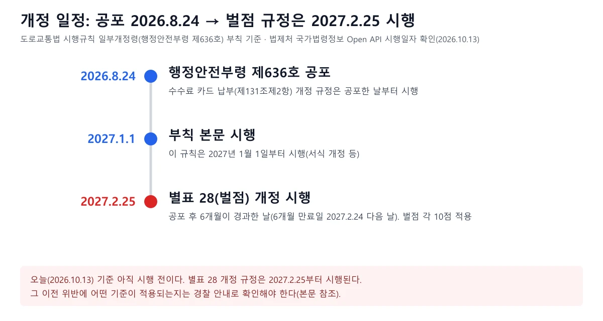
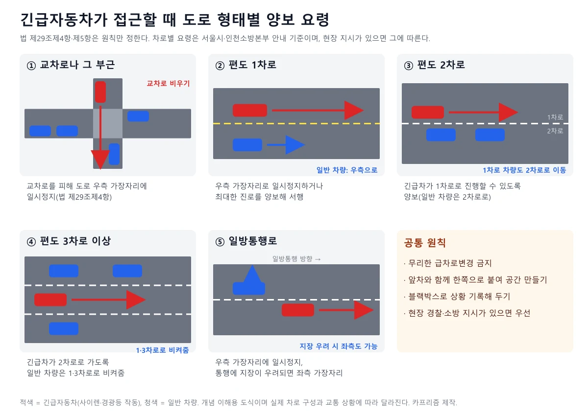
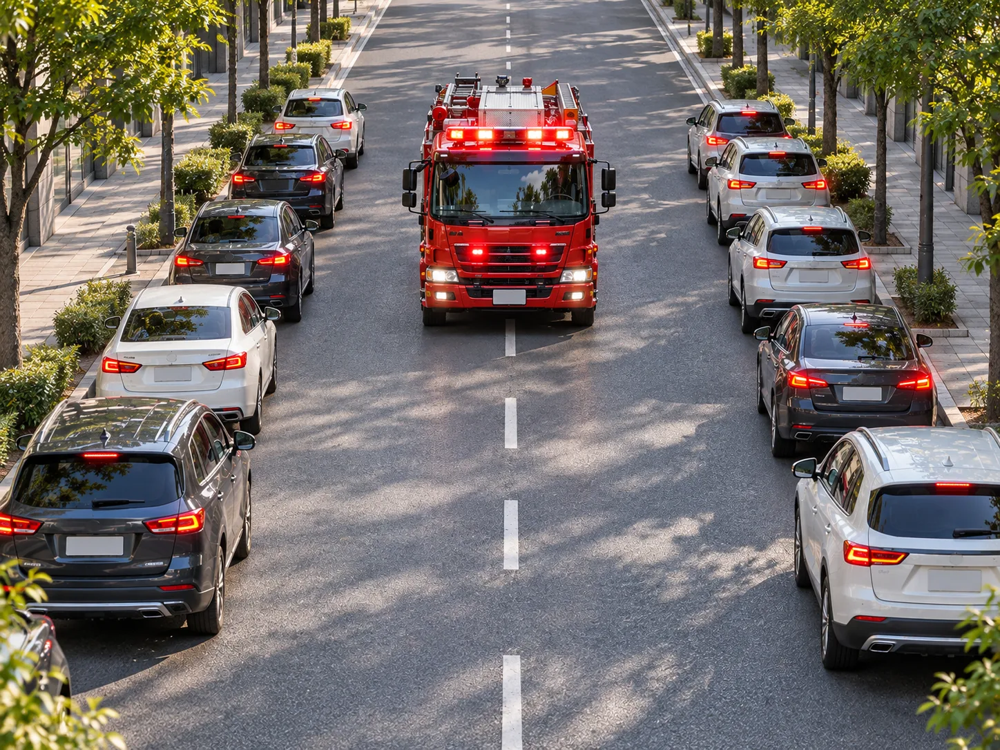
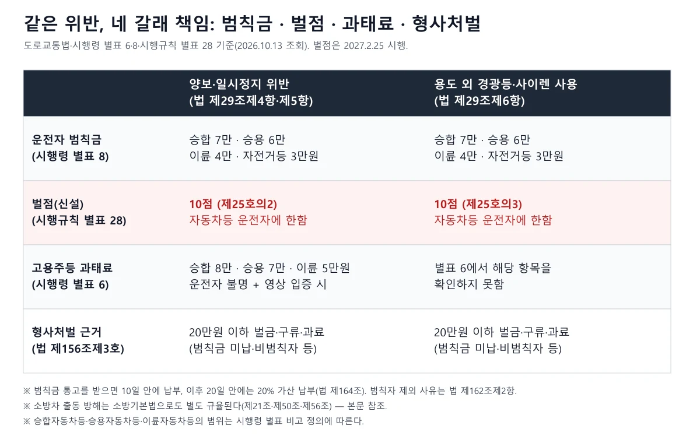
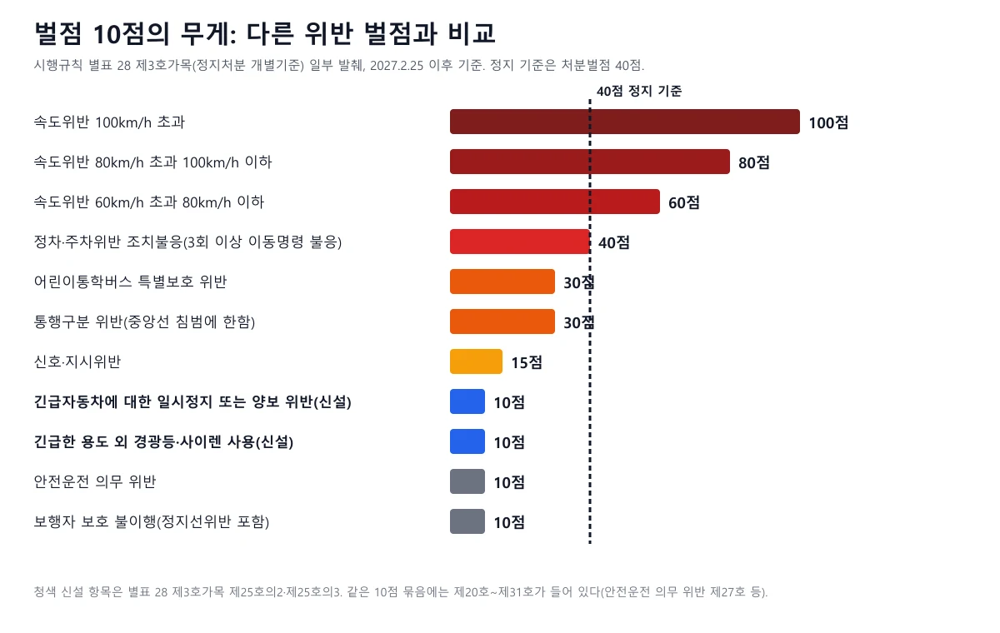
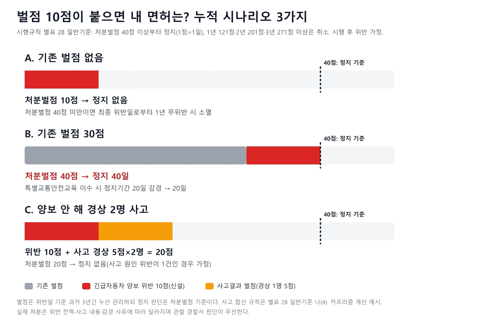
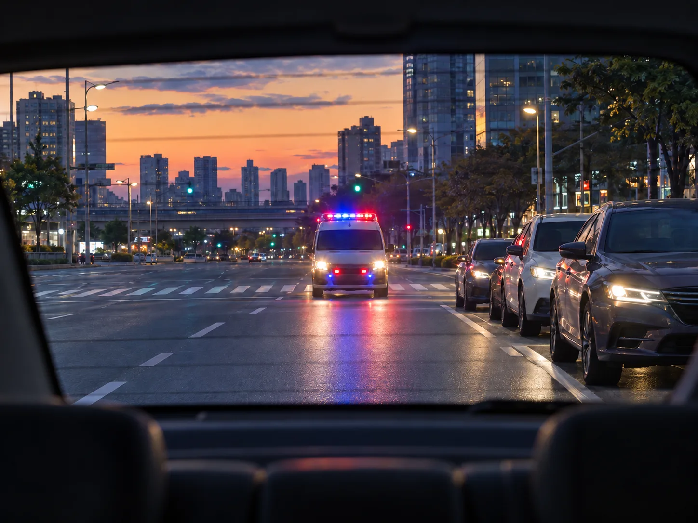
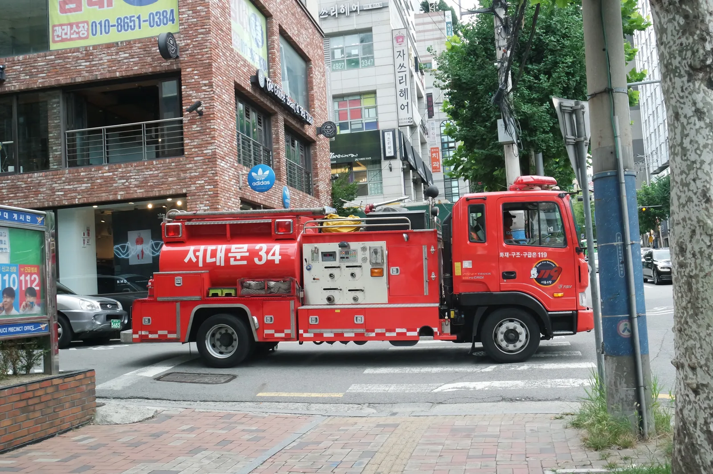

▲ 긴급자동차가 접근하면 교차로 부근에서는 교차로를 피해 일시정지, 그 외에는 진로를 양보해야 한다(도로교통법 제29조제4항·제5항) ⓒ Kevin.B / Wikimedia Commons, CC BY-SA 4.0
"소방차 사이렌이 들리는데 어디로 비켜야 할지 몰라 그냥 서 있었다면?" 지금까지는 범칙금이나 과태료만 문제였지만, 2027년 2월 25일부터는 벌점 10점이 따로 붙는다. 2026년 10월 13일 기준으로 국가법령정보센터 Open API에서 도로교통법(2026.10.13 공포 법률 제22067호 반영본)·시행령(2026.10.2 시행분)·시행규칙(행정안전부령 제636호), 소방기본법을 직접 내려받아 조문과 별표를 대조했고, 벌점 칸은 별표 서식 이미지를 열어 눈으로 확인했다. 확인하지 못한 항목은 "확인하지 못했다"로 적었다. 이 글의 초점은 "이미 범칙금이 있는데 벌점이 더 붙으면 내 면허에 무슨 일이 생기나"이며, 통학버스 벌점 30점 중심의 기존 기사는 긴급차·통학버스 양보 기사에서, 벌점 일반 개념은 벌점 40점 면허정지 기사에서 다뤘다.
1. 무엇이 바뀌었나 — 공포 8월 24일, 벌점은 2027년 2월 25일 시행
도로교통법 시행규칙 일부개정령(행정안전부령 제636호)이 2026년 8월 24일 공포됐다. 제개정이유는 "소방차ㆍ구급차 등 긴급자동차의 신속한 출동 환경을 조성하고 긴급자동차가 본래의 긴급한 용도로 사용될 수 있도록 긴급자동차의 우선 통행을 방해하는 위반행위 및 긴급자동차의 용도 외 운행 등에 대한 벌점 규정을 신설"한다고 적었다. 같은 개정에는 주차위반·안전운전 의무 위반 등 벌점 대상이 자동차와 원동기장치자전거 운전자임을 명시하고, 운전면허 갱신 기간이 생일 전후 각각 6개월로 바뀐 것을 서식에 반영하는 내용도 들어 있다. 도로교통법 시행규칙 원문 바로가기

▲ 공포는 2026.8.24, 벌점 규정(별표 28)은 2027.2.25 시행이다(6개월 만료일 2027.2.24의 다음 날). 오늘 기준 아직 시행 전이다 ⓒ 카프리즘 제작 도표 (시행규칙 제636호 부칙·법제처 시행일자 기준)
| 구분 | 내용 | 근거 |
|---|---|---|
| 공포 | 2026.8.24, 행정안전부령 제636호 | 시행규칙 개정문 |
| 공포일 시행 | 제131조제2항(수수료 납부수단에 신용카드·직불카드 등 추가) | 부칙 단서 |
| 2027.1.1 시행 | 부칙 본문. 서식 개정 등 나머지 규정 | 부칙 본문, 법제처 시행일자 |
| 2027.2.25 시행 | 별표 28 개정 규정(벌점) | 부칙 단서 "공포 후 6개월이 경과한 날"(2026.8.24 공포, 초일 불산입으로 6개월 만료일은 2027.2.24, 그 다음 날), 법제처 시행일자 2027.2.25 |
| 경과조치 | 부칙에서 시행일 외의 경과조치 조문은 보이지 않았다. 시행 전 위반에 벌점을 소급하는지는 부칙에서 확인되지 않아 단정하지 않는다 | 부칙 원문 확인 범위 |
📍 법이 아니라 "시행규칙" 개정이라는 점
긴급자동차 양보 의무와 범칙금 자체는 도로교통법 제29조와 시행령 별표에 이미 있다. 이번에 바뀐 것은 면허 행정처분의 기초가 되는 벌점표(시행규칙 별표 28)다. 즉 "새 의무가 생긴 것"이 아니라 "같은 의무를 어겼을 때 면허 쪽 불이익이 붙게 된 것"이다.
2. 법 제29조는 무엇을 요구하나 — 제4·5·6항 한눈에
도로교통법 제29조는 긴급자동차의 특례(제1~3항)와 일반 운전자의 의무(제4~6항)를 한 조문에 담고 있다. 이번 벌점 신설 대상은 제4항·제5항(양보·일시정지)과 제6항(용도 외 경광등·사이렌 금지)이다. 원문 요지는 다음과 같다. 국가법령정보센터 도로교통법 바로가기
| 항 | 누구에게 | 요구 내용 |
|---|---|---|
| 제4항 | 교차로나 그 부근에서 긴급자동차가 접근할 때 차마와 노면전차의 운전자 | 교차로를 피하여 일시정지 |
| 제5항 | 모든 차와 노면전차의 운전자(제4항에 따른 곳 외의 곳) | 긴급자동차가 우선통행할 수 있도록 진로를 양보 |
| 제6항 | 제2조제22호 각 목의 자동차 운전자 | 본래의 긴급한 용도로 운행하지 않을 때는 경광등을 켜거나 사이렌을 작동하지 않는다. 다만 대통령령으로 정하는 순찰·훈련 등은 예외 |
"긴급자동차"는 신분이 아니라 운행 상황으로 정의된다. 법 제2조제22호는 소방차, 구급차, 혈액 공급차량, 그 밖에 대통령령으로 정하는 자동차(경찰용 자동차, 군 유도차량, 응급작업 공익사업 차량 등)로서 "그 본래의 긴급한 용도로 사용되고 있는 자동차"라고 한다. 시행령 제3조제1항제2호는 사이렌을 울리거나 경광등을 켜는 것을 우선 통행·특례를 적용받으려는 경우의 준수사항으로 둔다. 그래서 내가 양보해야 하는 대상은 사이렌·경광등을 작동하며 긴급 용도로 달리는 차다. 한편 시행령 제2조제2항은 생명이 위급한 환자나 수혈용 혈액을 운송 중인 자동차도 긴급자동차로 보되, 이런 차는 전조등이나 비상표시등을 켜는 등 방법으로 긴급 목적을 표시하도록 한다(제3조제2항).
▲ 서울 도로를 달리는 현대 구급차(2018년 2월 20일 촬영). 제6항 예외 외에는 긴급한 용도로 운행할 때만 경광등·사이렌을 쓸 수 있다 ⓒ Kevin.B / Wikimedia Commons, CC BY-SA 4.0
제6항에는 예외가 있다. 시행령 제10조의2는 소방차가 화재 예방 및 구조·구급 활동을 위해 순찰하는 경우, 제2조제22호 각 목의 자동차가 본래의 긴급한 용도와 관련된 훈련에 참여하는 경우, 경찰용 자동차가 범죄 예방·단속을 위해 순찰하는 경우에는 긴급 출동이 아니어도 경광등·사이렌을 쓸 수 있게 했다. 이 범위를 벗어난 사용(예: 출동 목적이 아닌 이동, 사적 용무)이 벌점 대상인 제25호의3이다. 도로교통법 시행령 원문 바로가기
3. 도로별 양보 요령 — 법은 원칙, 요령은 지자체·소방 안내
법 제29조는 "교차로 부근에서는 교차로를 피해 일시정지, 그 밖에는 진로를 양보"까지만 정한다. 차로별 구체 요령은 법령에 없고 서울시와 소방본부의 안내에 나온다. 서울시 '내 손안에 서울'(2019.8.26)은 교차로 부근은 교차점을 피해 도로 우측 끝에 일시정지, 일방통행로는 우측 가장자리 일시정지(통행에 지장이 우려되면 좌측), 편도 1차로는 오른쪽 가장자리로 옮겨 저속 주행하거나 정지, 편도 2차로는 소방차가 1차로를 달릴 수 있도록 양보, 편도 3차로 이상은 소방차가 2차로를 지나도록 일반 차량이 1·3차로로 비켜 준다고 소개했다. 인천소방본부 보도자료(2022.8.18)도 편도 1차로는 "우측 가장자리로 일시 정지하거나 최대한 진로를 양보해 서행"하고, 편도 2차로는 긴급차량이 1차로로 진행할 수 있도록 양보하라고 안내했다. 서울시 길 터주기 안내 바로가기 인천소방본부 안내 바로가기

▲ 도로 형태별 양보 요령 도식. 법령이 아니라 서울시·인천소방본부 안내를 바탕으로 한 개념도다 ⓒ 카프리즘 제작 도식 (서울시·인천소방본부 안내 기준)
| 상황 | 요령 | 근거 |
|---|---|---|
| 교차로·그 부근 | 교차로를 피해 도로 우측 가장자리에 일시정지. 교차로 안에서 멈춰 막지 않는다 | 법 제29조제4항 |
| 편도 1차로 | 우측 가장자리로 일시정지하거나 최대한 양보하며 서행 | 서울시·인천소방본부 안내 |
| 편도 2차로 | 긴급차가 1차로로 진행하도록 양보(1차로 차량은 2차로로) | 서울시·인천소방본부 안내 |
| 편도 3차로 이상 | 긴급차가 2차로로 가도록 1·3차로로 비켜줌 | 서울시 안내 |
| 일방통행로 | 우측 가장자리 일시정지, 통행 지장이 우려되면 좌측 가장자리 정지 가능 | 서울시 안내 |
| 고속도로 | 제29조제5항은 제4항의 곳 외의 곳이라고만 적어 도로 종류를 가리지 않는 것으로 읽힌다. 고속도로 전용 요령과 갓길 이용 가능 여부는 이번에 확인하지 못했다 | 법 제29조제5항(카프리즘 해석) |

▲ 소방차가 접근할 때 일반 차량이 좌우 가장자리로 붙어 통행 공간을 만드는 상황을 그린 예시 이미지다 ⓒ AI 생성 이미지(예시). 실제 장소·사건 사진이 아니다
✅ 사이렌이 들릴 때 운전 순서
· 1단계, 방향 확인: 사이렌이 앞에서 오는지, 뒤에서 오는지 거울과 소리로 파악한다
· 2단계, 교차로 안이면 먼저 빠져나오기: 교차로 한가운데에서 멈추지 말고 진행을 마친 뒤 가장자리로 붙는다(제4항 취지)
· 3단계, 한쪽으로 붙이기: 차로 수에 따라 우측 또는 지정된 방향으로 이동한다
· 4단계, 급차로변경 금지: 무리한 이동은 사고로 이어진다. 앞차와 함께 공간을 만든다
· 5단계, 지나간 뒤에도 확인: 뒤따르는 긴급차가 더 있는지 확인한 뒤 서행으로 복귀한다
· 6단계, 기록: 양보하다 정지선·차로 위반이 생겼다면 블랙박스 영상을 보존해 두고, 제출 요령은 블랙박스 영상 제출 기사를 참고한다
4. 지금도 있는 처벌 — 범칙금·과태료·형사처벌·소방기본법
벌점은 새로 붙는 것일 뿐, 기존 금전·형사 책임이 없어지거나 대체되는 것이 아니다. 시행령 별표 8(운전자 범칙행위 및 범칙금액)에서 제12호의2(긴급자동차에 대한 양보·일시정지 위반, 법 제29조제4항·제5항)와 제12호의3(긴급한 용도나 그 밖에 허용된 사항 외 경광등·사이렌 사용, 제29조제6항)은 같은 구간에 묶여 승합자동차등 7만 원, 승용자동차등 6만 원, 이륜자동차등 4만 원, 자전거등 및 손수레등 3만 원이다. 별표 서식 표의 합쳐진 칸 구조상 두 항목에 같은 금액이 적용되는 것으로 읽었다. 승용 6만 원은 언론 보도(2026.9.22)로도 확인했지만, 승합·이륜·자전거 금액과 벌점 10점은 법제처 별표 이미지의 합쳐진 칸 구조로 읽은 값이다. 숫자가 행마다 따로 적혀 있지 않아 경찰청 교통민원24 등으로 교차 확인하지 못했다.

▲ 같은 위반에 붙는 범칙금·벌점·과태료·형사처벌 근거 비교. 벌점만 2027.2.25부터 새로 적용된다 ⓒ 카프리즘 제작 도표 (시행령 별표 6·8, 시행규칙 별표 28, 법 제156조)
| 구분 | 금액·내용 | 근거 |
|---|---|---|
| 운전자 범칙금 | 승합 7만 / 승용 6만 / 이륜 4만 / 자전거등 3만 원 (제12호의2·제12호의3) | 시행령 별표 8 |
| 고용주등 과태료 | 승합 8만 / 승용 7만 / 이륜 5만 원. 양보·일시정지 위반(제29조제4항·제5항)만 해당, 별표 6에서 제6항 위반 항목은 찾지 못했다 | 시행령 별표 6 제5호, 법 제160조제3항 |
| 과태료 부과 요건 | 위반 사실이 사진·영상으로 입증되고 운전자를 확인할 수 없어 고지서를 발급할 수 없거나 범칙금 통고처분을 할 수 없는 경우. 법정 상한 20만 원 이하 | 법 제160조제3항 |
| 형사처벌 | 제29조제4항~제6항 위반은 20만 원 이하의 벌금이나 구류 또는 과료 | 법 제156조제3호 |
| 통고처분과 납부 | 통고서를 받으면 10일 안에 납부, 이후 20일 안에는 20% 가산 납부. 범칙금을 내면 같은 행위로 다시 벌 받지 않는다 | 법 제164조 |
| 범칙자 제외 | 운전면허증 제시 불가·신원 확인 질문 불응 운전자, 범칙행위로 교통사고를 일으킨 사람(일부 예외) 등은 범칙자에서 빠져 형사 절차로 갈 수 있다 | 법 제162조제2항 |
| 소방자동차 출동 방해 | 사이렌 출동 중 소방차에 진로를 양보하지 않거나 앞에 끼어들거나 가로막는 행위 금지. 위반해 출동에 지장을 준 경우 200만 원 이하 과태료, 출동 방해는 5년 이하 징역 또는 5천만 원 이하 벌금 | 소방기본법 제21조제3항, 제56조제2항, 제50조제2호 |
소방기본법은 별도 잣대다. 제21조제3항은 모든 차와 사람이 소방자동차가 사이렌을 사용해 출동하는 경우 ① 진로를 양보하지 않는 행위 ② 소방자동차 앞에 끼어들거나 가로막는 행위 ③ 그 밖에 출동에 지장을 주는 행위를 하지 말라고 정한다. 위반에는 제56조제2항으로 200만 원 이하 과태료가 있고, 제21조제1항(출동 방해 금지) 위반은 제50조제2호로 5년 이하 징역 또는 5천만 원 이하 벌금이다. 도로교통법과 소방기본법이 같은 행위에 어떻게 함께 적용되는지, 어느 쪽이 우선하는지는 이번에 확인하지 못했다. 국가법령정보센터 소방기본법 바로가기
📍 시행규칙 서식의 6·5·4만 원은 무엇인가
시행규칙 과태료 영수증 서식(별지 제153호서식)에는 "긴급자동차에 대한 양보의무 위반 6만 원·5만 원·4만 원"이라는 칸이 보인다. 그러나 시행령 별표 6의 고용주등 과태료는 8만·7만·5만 원, 별표 8의 범칙금은 7만·6만·4만 원으로 서로 다르다. 서식은 영수증 양식이고 시행령에 규정된 금액 중 필요한 부분을 추가로 반영해 쓰라는 비고가 붙어 있어, 금액의 근거로는 시행령 별표를 따랐다.
5. 벌점 10점이 붙으면 내 면허엔 무슨 일이 — 정지·취소 기준과 계산
면허 정지는 "처분벌점 40점 이상"부터 시작된다. 시행규칙 별표 28 일반기준 다(2)는 정지처분이 1회의 위반·사고로 인한 벌점 또는 처분벌점이 40점 이상이 된 때부터 결정해 집행하고, 원칙적으로 1점을 1일로 계산한다고 정한다. 취소는 1회의 위반·사고로 인한 벌점 또는 연간 누산점수가 1년간 121점, 2년간 201점, 3년간 271점 이상에 이른 때다. 벌점은 위반일 기준 과거 3년간 모든 벌점을 누산해 관리한다.

▲ 신설 항목 10점은 안전운전 의무 위반(제27호)과 같은 10점 묶음에 들어갔다. 정지 기준 40점과 비교한 도표 ⓒ 카프리즘 제작 도표 (시행규칙 별표 28 제3호가목 발췌)
| 항목 | 내용 |
|---|---|
| 정지 기준 | 1회의 위반·사고로 인한 벌점 또는 처분벌점이 40점 이상이면 정지, 1점=1일 |
| 취소 기준 | 1년 121점, 2년 201점, 3년 271점 이상 |
| 누산 관리 | 해당 위반·사고일 기준 과거 3년간 벌점 누산 |
| 무위반 소멸 | 처분벌점이 40점 미만일 때 최종 위반일 또는 사고일로부터 위반·사고 없이 1년이 지나면 처분벌점 소멸 |
| 벌점 감경 교육 | 처분벌점 40점 미만인 사람이 특별교통안전 권장교육 중 벌점감경교육 또는 의무교육 중 법규준수교육을 마치고 교육확인증을 내면 처분벌점에서 20점 감경 |
| 정지 일수 감경 | 정지처분을 받게 되거나 받은 사람이 특별교통안전 의무교육 또는 권장교육 중 법규준수교육(권장)을 마치면 정지기간 20일 감경. 그 뒤 현장참여교육까지 마치면 30일 추가 감경(심의·행정심판 등으로 이미 감경된 경우는 제외) |
| 무위반·무사고 서약 | 경찰청장 고시에 따라 서약하고 1년간 실천하면 10점 특혜점수 부여, 정지처분을 받게 될 때 누산점수에서 10점 단위로 공제 |
| 적용 대상 | 제25호의2·제25호의3은 자동차등(법 제2조제21호: 자동차와 원동기장치자전거)을 운전한 경우에 한해 벌점 부과(별표 28 가목 비고 3) |

▲ 세 가지 가정에 따른 처분벌점 합계. 기존 벌점 30점이 있을 때만 이 위반 하나로 40점 기준에 닿는다 ⓒ 카프리즘 제작 도표 (시행규칙 별표 28 기준 계산 예시)
| 경우 | 계산 | 결과 |
|---|---|---|
| A. 기존 벌점 없음 | 0 + 10 = 10점 | 정지 기준(40점) 미만. 이후 1년간 위반·사고가 없으면 소멸. 감경교육으로 20점 감경도 가능 |
| B. 기존 처분벌점 30점(예: 신호위반 15점 두 번) | 30 + 10 = 40점 | 정지처분 대상, 40일. 교육 이수로 20일 감경 가능, 이수 후 현장참여교육까지 하면 30일 추가 감경 가능 |
| C. 양보하지 않아 접촉사고, 경상 2명 | 위반 10 + 경상 1명당 5점×2 = 20점 | 사고 원인 위반이 둘 이상이면 가장 중한 하나만 적용. 쌍방과실 등 별도 감경 규정은 별표 28 사고결과 비고 참조 |
벌점은 범칙금과 별개의 행정 기록이다. 범칙금을 냈다고 벌점이 없어진다는 규정은 확인하지 못했다. 반대로 범칙금 납부기간 만료일부터 60일이 지나도록 즉결심판을 받지 않으면 별표 28 제7호로 벌점 40점이 붙을 수 있고, 통고받은 범칙금에 50%를 더해 내고 증빙을 내면 정지처분을 하지 않는다(별표 28 가목 비고 2). 단속에 이의가 있을 때 절차는 과태료 이의신청 기사를 참고하자.
6. 이런 때는 어떻게 되나 — 상황별 정리
| 상황 | 판단 포인트 |
|---|---|
| 꽉 막힌 도로에서 구급차가 뒤에서 접근 | 제5항은 진로를 양보하라고 한다. 앞차들과 같이 좌우로 붙어 길을 내는 것이 안내 요령이다. 물리적으로 비킬 공간이 전혀 없는 상황의 책임 판단은 법령에서 확인하지 못했다 |
| 교차로 한복판에서 사이렌을 들었다 | 제4항은 교차로를 "피하여" 일시정지하라고 한다. 진입해 있다면 정지로 막지 말고 교차로를 벗어난 뒤 가장자리에 붙는 것이 취지에 맞는 것으로 보인다(카프리즘 해석) |
| 양보하려다 정지선·차로를 넘었다 | 기존 기사는 블랙박스로 사정을 소명할 수 있다고 소개했다. 법령상 면책 규정은 이번에 확인하지 못했다. 관련 기사 |
| 경광등이 달린 일반 승용차 | 긴급자동차가 아닌 자동차에 부착된 경광등·사이렌·비상등은 시행규칙 제29조제3호의 불법부착장치 기준에 해당하고, 법 제49조제1항제4호가 그런 장치를 한 차의 운전을 금지한다. 범칙금은 시행령 별표 8 제62호에 있다 |
| 긴급자동차 도색을 흉내 낸 차 | 법 제42조제1항은 긴급자동차와 유사한 도색·표지를 한 차의 운전을 금지하고, 시행령 제27조가 "긴급자동차로 오인할 수 있는 색칠 또는 표지"를 제한 범위로 든다 |
| 소방차가 순찰·훈련 중 사이렌을 켰다 | 시행령 제10조의2가 소방차의 순찰, 훈련 참여, 경찰용 자동차의 범죄 예방 순찰을 예외로 둔다. 이 범위의 사용은 제6항 위반이 아니다 |
| 환자를 태운 일반 승용차가 병원으로 급행 | 시행령 제2조제2항이 생명이 위급한 환자 운송 중인 자동차를 긴급자동차로 보지만, 사이렌 없이 비상표시등으로 표시하는 차다. 일반 운전자가 이를 알아보고 양보할 의무의 범위는 이번에 확인하지 못했다 |

▲ 교차로 부근에서 긴급자동차가 접근하면 교차로를 피해 우측에 일시정지하는 장면을 그린 예시 이미지다 ⓒ AI 생성 이미지(예시). 실제 장소·사건 사진이 아니다

▲ 서울 시내 도로의 소방 펌프차(2016년 8월 28일 촬영). 도로 폭이 좁은 도심에서는 일반 차량이 비켜 주는 공간이 출동 경로를 좌우한다 ⓒ 廣九直通車 / Wikimedia Commons, CC BY-SA 4.0
📍 소방차 길을 막는 주정차는 별개의 문제
소방기본법 제25조제3항은 소방대장 등이 긴급 출동 시 소방차 통행과 소방활동에 방해가 되는 주차·정차 차량과 물건을 제거하거나 이동시킬 수 있도록 한다. 이번 벌점 신설은 달리는 긴급차에 대한 양보 의무가 대상이며, 소방 관련 시설 주변 주·정차 금지(법 제32조제6호)는 별도 조항이다. 이 글은 후자의 금액을 다루지 않았다.
7. 같은 개정에 들어간 다른 내용 — 음주 감경 배제 기준과 벌점 대상 명시
긴급자동차 벌점만 바뀐 것은 아니다. 개정문에는 별표 28 제1호 바목(1)(가)5)의 "과거 5년 이내에"를 "2001년 6월 30일 이후"로 바꾸는 내용이 있다. 이 항목은 음주운전으로 취소·정지처분을 받은 사람이 생계형 등 사유로 감경을 신청할 수 없는 경우를 나열한 대목이다. 현행 원문은 "2001년 6월 30일 이후 음주운전의 전력이 있는 경우"로 적혀 있어, 감경 배제 판단의 전력 조회 기간이 "과거 5년"에서 2001년 6월 30일 이후 전체로 늘어난 것으로 읽힌다(카프리즘 해석, 2027.2.25 시행).
| 내용 | 변경 방향 | 시행 |
|---|---|---|
| 제25호의2·제25호의3 신설 | 긴급자동차 양보·일시정지 위반, 용도 외 경광등·사이렌 사용 벌점 각 10점 | 2027.2.25 |
| 가목 비고 3 정비 | 벌점이 자동차등을 운전한 경우에 한해 부과되는 호 번호 목록에 제25호의2·제25호의3 추가 등 | 2027.2.25 |
| 음주 감경 배제 요건 | "과거 5년 이내" 음주운전 전력 → "2001년 6월 30일 이후" 음주운전 전력 | 2027.2.25 |
| 운전면허 갱신 서식 | 갱신 기간이 생일 전후 각 6개월로 바뀐 것을 서식 유의사항에 반영 | 2027.1.1 |
📍 안전띠·깜빡이 벌점안과는 별개 개정이다
안전띠 미착용·방향지시등 미점등·안전모 미착용 벌점 신설안은 이번 제636호 개정과 다른 개정안이다. 2026년 10월 13일 법제처 Open API 조회에서 도로교통법 시행규칙의 최신 공포는 제636호(2026.8.24)였고, 해당 벌점안의 공포는 확인하지 못했다. 언론에서 전하는 입법 절차 단계도 이번에 경찰청 등 1차 출처로 확인하지 못했다. 두 주제는 깜빡이 미점등 단속 기사와 뒷좌석 안전띠 기사에서 따로 다루며, 혼동하지 않도록 이 글의 벌점 10점은 "긴급자동차 양보·경광등" 항목에만 해당한다.
8. 자주 묻는 질문
| 질문 | 확인된 내용 |
|---|---|
| 벌점은 지금도 붙나? | 아니다. 제25호의2·제25호의3은 2027.2.25 시행이다. 오늘(2026.10.13) 기준 벌점 신설은 시행 전이며, 범칙금·과태료·형사처벌 근거는 현재도 적용된다 |
| 벌점 10점이면 바로 정지인가? | 아니다. 정지는 처분벌점 40점 이상부터이고 1점이 1일이다. 기존 벌점이 얼마 있느냐에 따라 달라진다 |
| 벌점은 언제 사라지나? | 처분벌점이 40점 미만일 때 최종 위반일로부터 1년간 위반·사고가 없으면 소멸한다. 누산 기록은 위반일 기준 3년간 관리한다 |
| 감경할 방법이 있나? | 처분벌점이 40점 미만이면 벌점감경교육 등으로 20점 감경, 정지처분 시에는 법규준수교육으로 정지기간 20일 감경 규정이 있다 |
| 과태료는 운전자에게도 나오나? | 과태료(법 제160조제3항, 별표 6 제5호)의 대상은 고용주등이다. 운전자에게는 범칙금과 벌점이 붙는 구조로 읽힌다 |
| 자전거를 타다 길을 안 비켜도 벌점인가? | 범칙금 표에는 자전거등 3만 원 칸이 있다. 벌점은 별표 28 비고 3에 따라 자동차등 운전자에 한한다. 자전거 운전자의 벌점 적용 여부는 이번에 확인하지 못했다 |
| 시행 전 위반도 소급되나? | 부칙에서 경과조치 조문은 보이지 않았다. 관할 경찰서 안내로 확인하는 것이 안전하다 |
9. 요약
긴급자동차 양보·일시정지 위반과 용도 외 경광등·사이렌 사용에 벌점 10점이 붙는다. 시행규칙 제636호(2026.8.24 공포)는 별표 28 제3호가목에 제25호의2·제25호의3을 신설했고, 시행일은 법제처 기준 2027년 2월 25일이다. 현재도 운전자 범칙금은 승합 7만·승용 6만·이륜 4만 원, 영상 입증 시 고용주등 과태료는 8만·7만·5만 원이며, 통고처분을 따르지 않으면 20만 원 이하 벌금·구류·과료 대상이다.
면허에는 이렇게 영향을 준다. 정지는 처분벌점 40점 이상, 1점 1일이다. 기존 벌점이 없다면 10점은 정지 기준 미만이고 1년 무위반이면 소멸하며, 기존 30점이 있으면 40점이 되어 정지 40일이 가능하다. 교육 이수로 20점 또는 20일 감경 규정이 있다. 소방기본법에는 출동 방해에 대한 별도 과태료·형벌이 있고, 도로교통법과의 관계는 확인하지 못했다. 안전띠·깜빡이 벌점안은 별개 개정이며 공포는 확인하지 못했다. 고속도로 양보 전용 요령, 시행 전 위반 소급 여부, 별표 6의 제6항 위반 과태료는 확인하지 못했다.